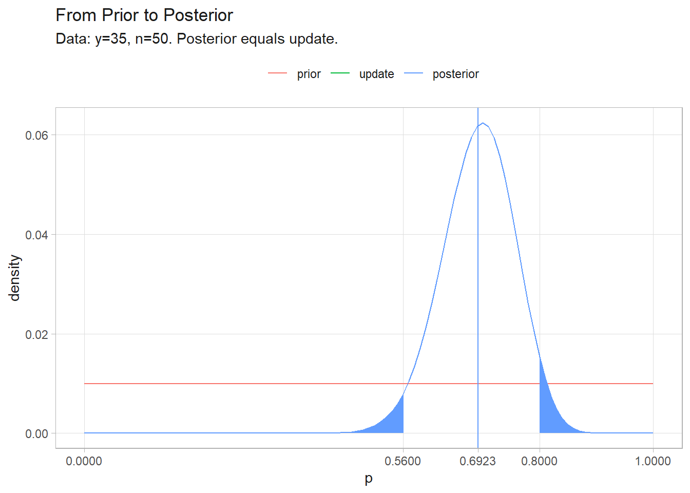
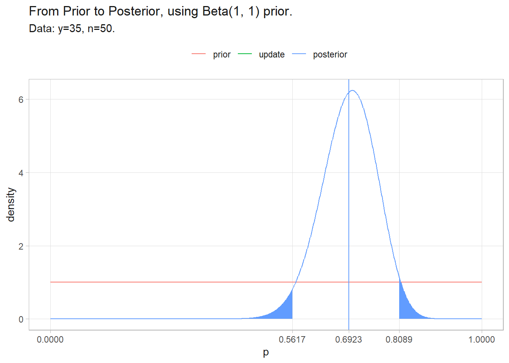
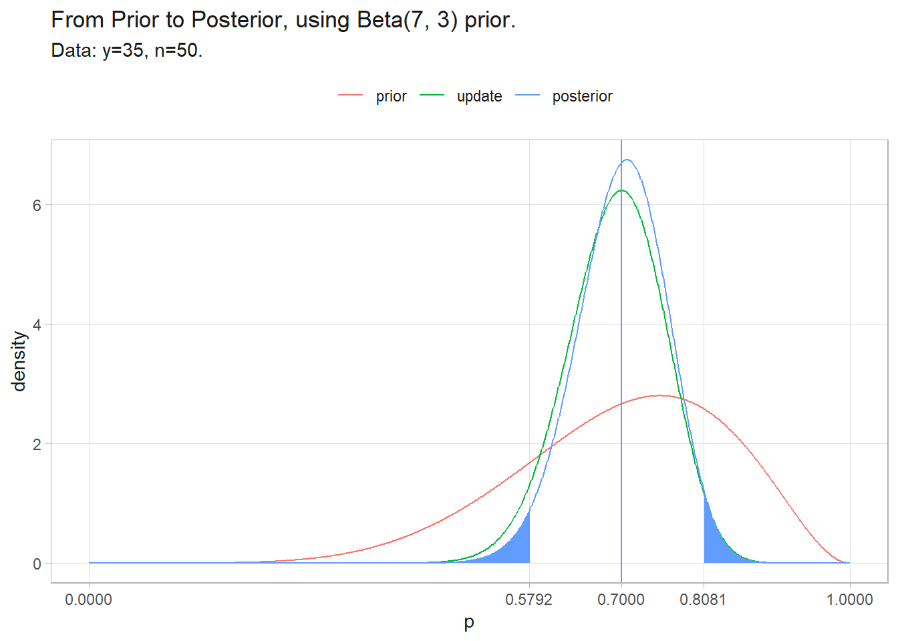

3.6 Beta Binomial and Estimating Proportions
Suppose \(y = 35\) of \(n = 50\) seeds germinate within 72hrs. What is the expected germination probability of a single seed? Seed germination can be modeled as \(n\) Bernoulli trials where events occur with probability, \(p\), and the number of observed events is \(y = \sum_i^n y_i\). The question is estimating the \(p\) parameter in the Bernoulli generating process.
The classical approach is to construct a 95% CI around \(p\) with a one-sample proportion test.
##
## 1-sample proportions test with continuity correction
##
## data: y out of n, null probability 0.5
## X-squared = 7.22, df = 1, p-value = 0.00721
## alternative hypothesis: true p is not equal to 0.5
## 95 percent confidence interval:
## 0.5521660 0.8171438
## sample estimates:
## p
## 0.7The Bayesian approach is to posit an expected distribution of \(p\) prior to observing the data, then update the distribution based on the relative likelihood of observing the data given the values in the distribution. The likelihood of \(y\) events in \(n\) trials follows the binomial distribution, \(y|p \sim \text{Bin}(n, p)\).
\[ f(y|p) = {n \choose y} p^y (1-p)^{n-y} \]
Start with a uniform prior - all values of \(p\) are equally likely. To get a feel for the approach, try this with discrete \(p\) values first.
# Explore the parameter space [0,1] in discrete .01 increments.
p <- seq(0, 1, by = 0.01)
# Prior distribution is uniform, 1/101 for all p's.
prior <- rep(1/length(p), length(p))
# Binomial likelihood of each p given 35/50 successes.
likelihood <- dbinom(35, 50, p)
# Bayes' Theorem: posterior = joint density / marginal density.
joint_density <- likelihood * prior
marginal_density <- sum(joint_density)
posterior <- joint_density / marginal_density
# 95% credible interval
(pi <- sum(posterior * p) / sum(posterior))
## [1] 0.6923077
(ci <- p[c(min(which(cumsum(posterior) > .025)),
max(which(cumsum(posterior) < .975)))])
## [1] 0.56 0.80
tibble(p, prior, update = likelihood / marginal_density / 101, posterior) %>%
pivot_longer(c(prior, update, posterior)) %>%
mutate(name = factor(name, levels = c("prior", "update", "posterior"))) %>%
ggplot(aes(x = p)) +
geom_line(aes(y = value, color = name)) +
geom_area(data = tibble(p, posterior, y = if_else(p <= ci[1], posterior, NA_real_)),
aes(y = y), fill = "#619CFF") +
geom_area(data = tibble(p, posterior, y = if_else(p >= ci[2], posterior, NA_real_)),
aes(y = y), fill = "#619CFF") +
geom_vline(aes(xintercept = pi), color = "#619CFF") +
scale_x_continuous(breaks = round(c(seq(0, 1, 1), ci, pi), 4)) +
labs(y = "density", color = NULL, title = "From Prior to Posterior",
subtitle = "Data: y=35, n=50. Posterior equals update.")
This was good, but we could have done better. The discrete values for the uniform prior limited the precision of the 95% CI. The better path is to model continuous values with the beta distribution, \(p \sim \text{Beta}(a, b)\). The PDF of the beta distribution is
\[ \begin{align} f(p) &= \frac{1}{\text{B}(a,b)} p^{a-1} (1-p)^{b-1} \\ &\propto p^{a-1} (1 - p)^{b -1} \tag{3.4} \end{align} \]
where \(a\) is the success count, \(b\) the failure count, and \(\text{B} = \frac{\Gamma(a)\Gamma(b)}{\Gamma(a+b)}\) is the beta function. Equation (3.4) is called the beta prior. The beta prior is a conjugate prior, meaning the posterior distribution is also a beta distribution, so the \(\frac{1}{\text{B}(a,b)}\) cancels out and the proportional form is all you need. The uniform prior distribution would be modeled with \(\text{Beta}(1, 1)\).
The likelihood of observing \(y\) successes in \(n\) trials given \(p\) follows the binomial PMF. The constant binomial coefficient can be discarded.
\[ \begin{align} f(y|p) &= {n \choose y} p^y (1-p)^{n-y} \\ &\propto p^y (1-p)^{n-y} \tag{3.5} \end{align} \]
The product of the prior and likelihood is the joint density. The marginal density is the integral of the joint density over all \(p\).
\[ \begin{equation} \int_{p=0}^1f(y|p) f(p) dp = \frac{\text{B}(a + y, b + (n-y))}{\text{B}(a, b)} \tag{3.6} \end{equation} \]
Using the proportional forms, the denominator of Bayes’ Theorem can be discarded, so the posterior distribution is just the joint density.
\[ \begin{align} f(p|y) & \propto f(y|p)f(p) \\ & \propto p^y (1-p)^{n-y} p^{a-1} (1 - p)^{b -1} \\ & \propto p^{a+y-1}(1-p)^{b+n-y-1} \\ & \sim \text{Beta}(a + y, b + (n - y)) \tag{3.7} \end{align} \]
The expected value of the beta distribution is \(a / (a + b)\). Updated with the observed data, the expected value is
\[ E(p|y) = \frac{a+y}{(a+y)+(b+(n-y))} = \frac{a + y}{a + b + n} = \frac{a + n \bar{y}}{a + b + n} \]
As the sample size increases, the \(a\) and \(b\) prior parameter values become less important and \(E(p|y)\) converges on the classical result of \(\bar{y}\). The code chunk below repeats the exercise above. This time that we can calculate a continuous 95% CI. Notice also that the marginal density never actually factored into the solution.
# These discrete p's are for illustrating the distributions now.
p <- seq(0, 1, by = 0.001)
# The prior distribution is uniform, Beta(1, 1).
a <- 1
b <- 1
prior <- dbeta(p, a, b)
# Instead of calculating the likelihood, joint density, marginal density, and
# finally the posterior, we can go straight to the posterior.
posterior <- dbeta(p, a + y, b + (n - y))
# 95% credible interval. This time we don't need p - we can go straight to the soln.
(pi <- (a + y) / ((a + y) + (b + (n - y))))
## [1] 0.6923077
(ci <- qbeta(c(.025, .975), a + y, b + (n - y)))
## [1] 0.5617113 0.8088960
# Construct the components anyway, just to graph them.
likelihood <- dbinom(y, n, p)
joint_density <- likelihood * prior
marginal_density <- sum(joint_density)
# Trickery to get discretely calculated joint and marginal densities to sum to
# same area as prior and posterior distributions.
update <- likelihood / (sum(likelihood) / sum(posterior))
tibble(p, prior, update, posterior) %>%
pivot_longer(c(prior, update, posterior)) %>%
mutate(name = factor(name, levels = c("prior", "update", "posterior"))) %>%
ggplot(aes(x = p)) +
geom_line(aes(y = value, color = name)) +
geom_area(data = tibble(p, posterior, y = if_else(p <= ci[1], posterior, NA_real_)),
aes(y = y), fill = "#619CFF") +
geom_area(data = tibble(p, posterior, y = if_else(p >= ci[2], posterior, NA_real_)),
aes(y = y), fill = "#619CFF") +
geom_vline(aes(xintercept = pi), color = "#619CFF") +
scale_x_continuous(breaks = round(c(seq(0, 1, 1), ci, pi), 4)) +
labs(y = "density", color = NULL, title = glue("From Prior to Posterior, using Beta({a}, {b}) prior."),
subtitle = "Data: y=35, n=50.")
Suppose your prior was better. You had taken a small sample of 10 and 7 seeds had germinated. The corroborating evidence centers on 70% and the credible interval tightens.
